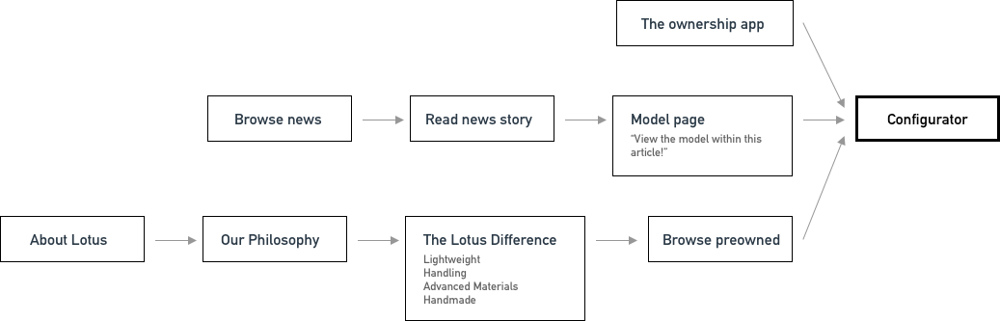
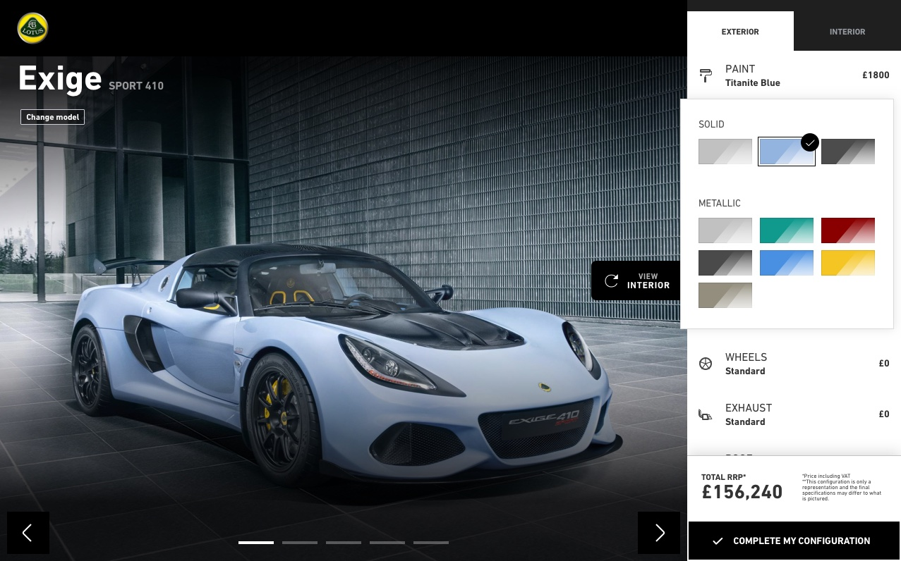
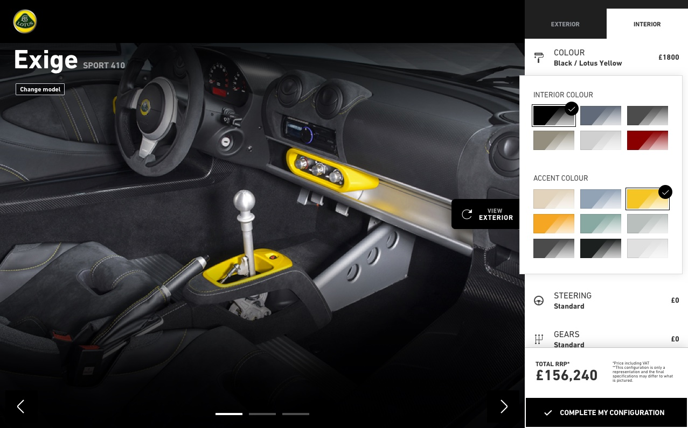
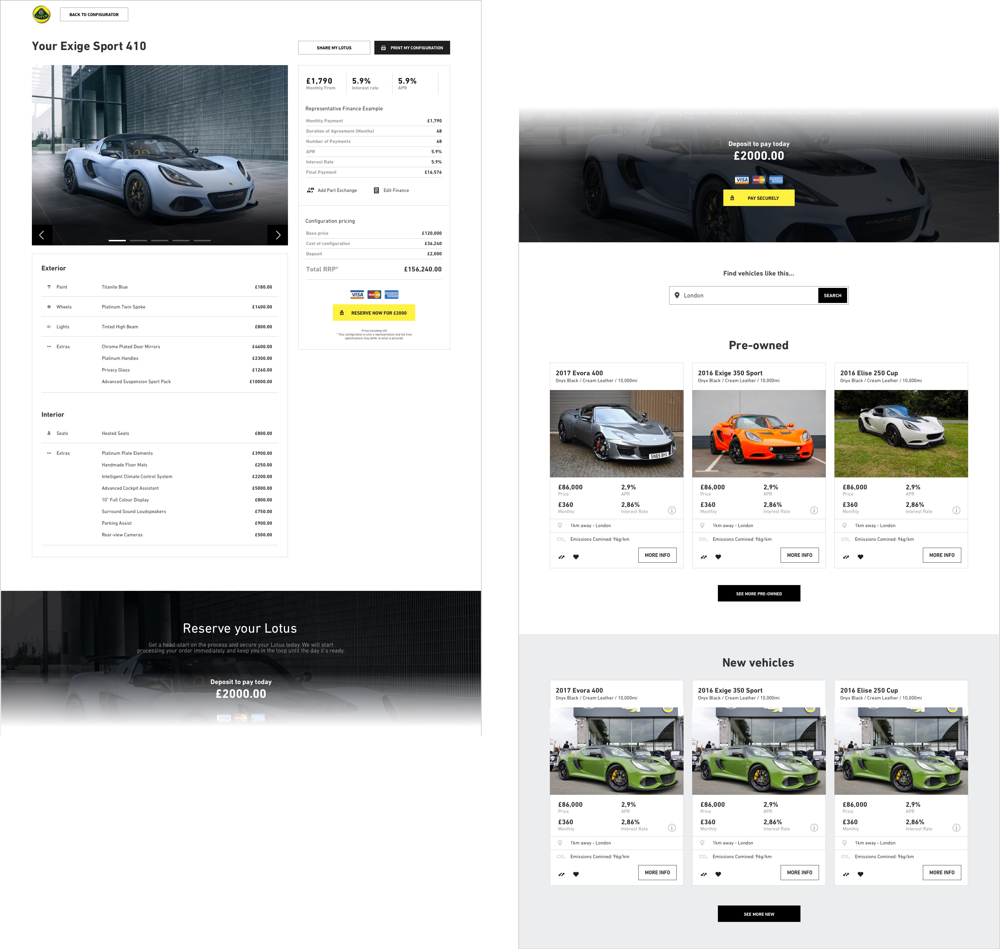

Lotus Configurator
During my time at Connect-Auto, I worked on several concepts for Lotus cars. Their digital presence was currently poor, and they required a large-scale overhaul of their online offerings. One particular experience they lacked was a configurator tool, where customers would be able to select various styling and functional options to build their own Lotus.
I travelled down to the Lotus HQ in Norwich to better understand more about their business and their customers. This was an invaluable experience in getting to deep dive and truly understand the goals in mind.
Ultimately, the following was discovered:
- The configurator should focus on transactions, but not to the detriment of customer experience. Many users will not be current active buyers. The overall experience is there to assist the users that are looking to spec a car, and are open to being encouraged to either place an order or at least enquire around availability.
- In addition to the configurator, the customer should also be shown matching new (and used) vehicles that are immediately available from dealer stock.
- We should find a way to encourage customers to explore and return, to help them make decisions and close in on their required specification. Social share may be one way to achieve this.
Next I set out to understand the core workflow that may lead customers towards the configurator. Users may enter this from any point in the dot com experience, so it was important that the view was contextual and tailored (ie. if you have been viewing a Lotus Elise in Black - load the configurator in with this in mind)
Designing the configutor
When it came to designing the configurator itself, a few key points were important here. First, a lot of presence was given to the image. Previous research had shown the importance of images to users (around 60% of page clicks are attributed to image clicks). Customers love to see as much of the vehicle as possible which should be expected.
It was also important to highlight pricing updates as they were applied. Categorising sections made it easier to collapse price breakdown information and make it more digestible for users. Users could also toggle between interior and exterior configurations with a prominent switcher on the UI.
 Satisfied users could then proceed by clicking ‘Complete my configuration’ to be taken forwards to the next step. This page would summarise the user’s selections, plus give them an option to finance or reserve. This is also where I chose to add the share and pre-owned listings, with the intention to stop it from overwhelming the main configurator view with too much information.
I then conducted some usability sessions with a selection of five users. Of the five selected, three considered themselves car enthusiasts with an interest in Lotus, the remaining two were more budget orientated without any necessary ties to Lotus. It was important that the tool was simple enough to be used by everyone.
Participants were asked to configure a car (and select various options) and then share this to social media. We discovered that, whilst no users struggled to use the configurator itself, there were issues with:.
- Placement of the share button. Users did not realise they needed to hit ‘complete my configuration’ to then find the share option - especially when paired with the price. It came across too much like a commitment to purchase at this point in the journey.
- Preowned vehicles left undiscovered. As they sat far down the page, these items remained hidden. It also suffers from the same issue as the share button.
- Finance information upfront. Some users found the total price very daunting, when they would only be interesting in financing this vehicle.
Users also mentioned that they would like 3D/360 views of the vehicles, so as they update options they can see the car from any angle.
I addressed the feedback as follows:
- Moved the share button to the configurator main page. This would then load the summary with the share dialogue.
- Moved the preowned vehicles higher up on the summary. In addition to this, experimented with making them more available on the main configurator view, through additional slide in panels (therefore, not taking up any of the image space)
- Added financing info to the main configurator, reducing the impact of the total cost to not scare away potential customers.
Sadly, I could not capture further metrics on this project as the proposal did not go ahead. If I had the opportunity to continue it, I would have done further user testing to validate these updates before development began.